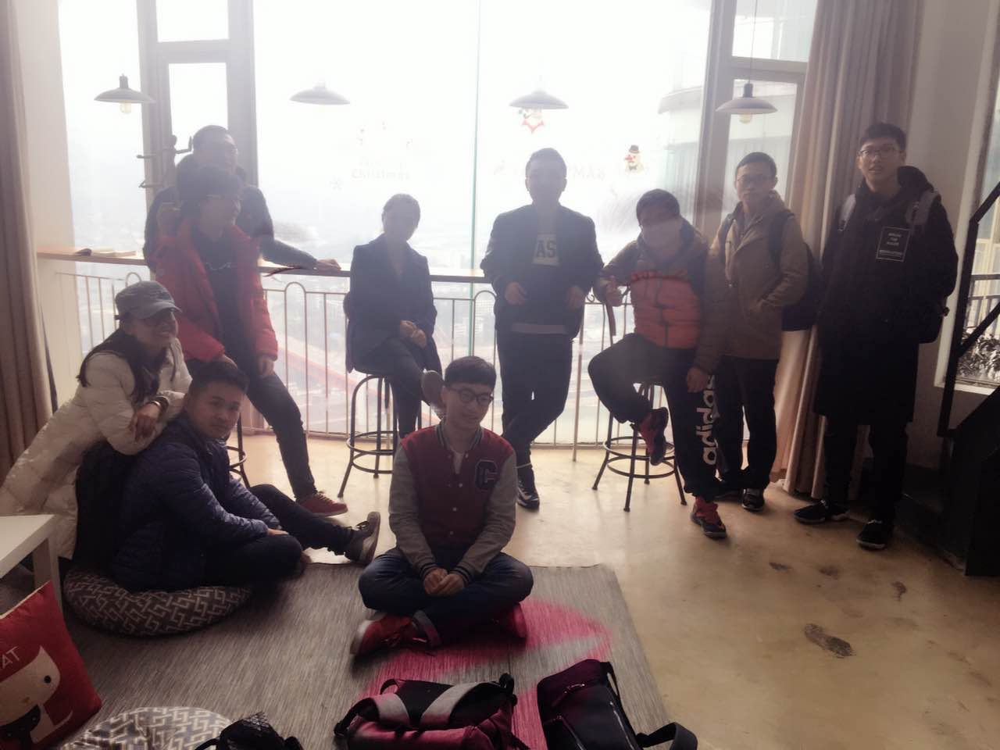
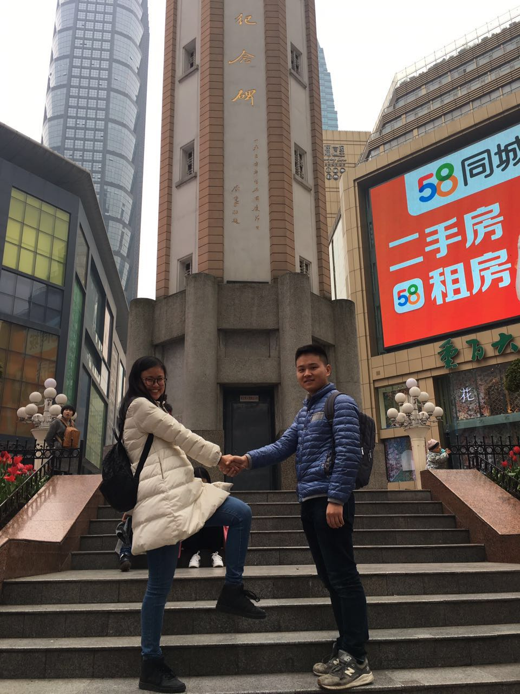

现在在重庆，和去哪儿小伙伴一起到这里来TB；说到TB，和在去哪儿遇到的这群人一起玩耍，真的很开心，去年11月在泰国，想想也是一段很难忘的旅程。

we’re here
说“我是属于这里的“，是想说，我是真的属于西南这片土地的，一直到现在都期望有一天就在昆明、成都或者重庆，度过余生。我长在云南，大学成长在成都，也很喜欢重庆这座接地气的都市。
喜欢这些城市的生活气息，感觉每一个人都会热爱生活，因为他们有足够的时间生活。也许是因为你来这座城市的目的不一样，在一座城市工作久了，换一座城市时，就会当成你生活的港湾。

永远年轻
重庆，对于我来说是一座有故事的城市。在来江北机场的路上，送机师傅放着“再回首”的音乐，突然有种非常释然，轻松的感觉，路在往前衍生，过去的风景一幕幕从你身边路过，他们仍然留在你的生活中，成为你的一部分。
南方姑娘，你是否习惯北方的秋凉。又要回到北方，继续写你的故事。在北京，从2015年11月待到2016年2月份，再从2016年7月份到现在，在北京，和一个南方男孩，在一个屋檐下吵吵闹闹，笑着，陪伴着彼此从男孩女孩成长为更大的男孩女孩，希望我们永远这样年轻，永远可以这样热泪盈眶，但又希望彼此都可以成熟一些，毕竟未来那个小家的生活，可能离我们真的不远了。从小都是一个人跌跌撞撞长大，爸爸妈妈只是在一旁，引导着你，谢谢他们让我自己长大，鼓励我追求我自己的脚步和生活，只是现在我远离家乡，但我相信，再坚持一会儿，我很快就归来，毕竟，我是属于这里的。

you and me